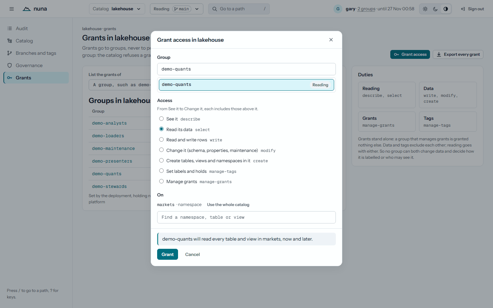

Grant and revoke access
Grant a group a privilege on a catalog, namespace, table or view, check what it will do before you grant it, and revoke it again.
Before you begin
- You are in a group named in
nuna.security.grant-admin-groups, or one of your groups holdsmanage-grantson the object or above it. - You are not in the group you grant to: no one grants to their own group.
- You know the group's name as the identity provider's token carries it. The server does not read the directory, so it cannot check the name.
- For the curl examples,
NUNAandTOKENare set as Use the APIs with curl describes.
Choose the object and the privilege
Grant on the highest object that covers the work: a grant on a namespace reaches every table, view and namespace in it, including those created later. Grant the lowest privilege that does the work, since each includes those below it: describe, then select, then write, then modify. create, manage-grants and manage-tags stand apart. Privileges says what each allows.
Mind separation of duties: in one catalog, a group that manages grants holds nothing else, and a group that changes data does not also set tags.
Grant a privilege
-
Select Grants in the rail.
To grant on one object instead, open its page, select its Access tab and select Grant access there; the dialog then grants on that object.
-
Select Grant access.
The dialog Grant access in trading opens.
-
Enter the group in Group.
-
Choose the access in Access.
The choices run from See it to Manage grants, each including those above it on the ladder.
-
Choose the object in On.
Search for a namespace, table or view, or select Use the whole catalog.
-
Read the line under the fields.
The console asks the server what the grant would do. It says what the group will be able to do, that the group already holds it, or why the server would refuse it, such as You belong to trading-analysts. No one grants to their own group: ask another grant admin.
-
Select Grant.
The dialog says Granted select on equities to trading-analysts. and offers See the record, the audit record of the grant.

Ask first what the grant would do. The preview takes the grant's body, writes nothing and leaves no audit record:
curl -sS -X POST "$NUNA/management/v1/catalogs/trading/grants/preview" \
-H "Authorization: Bearer $TOKEN" \
-H "Content-Type: application/json" \
-d '{"securable": {"type": "namespace", "namespace": ["equities"]}, "group": "trading-analysts", "privilege": "select"}'Its answer is admitted; unchanged, with granted-by and granted-at, when the group already holds it; or refused, with refusal (privilege-not-on-object, self-grant or separation-of-duties) and reason, the message the grant would answer. Then grant:
curl -sS -X POST "$NUNA/management/v1/catalogs/trading/grants" \
-H "Authorization: Bearer $TOKEN" \
-H "Content-Type: application/json" \
-d '{"securable": {"type": "namespace", "namespace": ["equities"]}, "group": "trading-analysts", "privilege": "select"}'A grant answers 204 with no body, also when the group already holds it. The securable's type is catalog, namespace, table or view; a namespace, table or view names its namespace levels, and a table or view its name. To grant through one catalog branch only, add "branch": "dev", with write or modify.
Revoke a privilege
-
Select Grants in the rail.
-
Select Revoke on the grant's row.
The dialog Revoke select from trading-analysts says what the group loses and that the grant and its revocation stay in the audit trail.
-
Select Revoke in the dialog.
Send the grant's body to /revoke. It answers 204.
curl -sS -X POST "$NUNA/management/v1/catalogs/trading/grants/revoke" \
-H "Authorization: Bearer $TOKEN" \
-H "Content-Type: application/json" \
-d '{"securable": {"type": "namespace", "namespace": ["equities"]}, "group": "trading-analysts", "privilege": "select"}'A revoke removes only the grant it names. If the group holds the same privilege on an object above, it keeps it through that grant: check the effective grants.
If it fails
| What you see | Why | What to do |
|---|---|---|
403 no one grants to a group they belong to: trading-analysts | You are in that group. | Ask another grant admin. |
403 group trading-engineers holds create in this catalog, a data duty that manage-tags (tags) must stay separate from | The group already holds a duty in the catalog that conflicts with the one you grant. The message names one privilege it holds, not where. | Grant the privilege to a different group, or revoke the conflicting grants first. |
403 group grant-admins administers grants on every catalog and may hold no other grant | The group is a grant-admin group. | Grant to another group. |
403 group platform-operators operates the platform and may hold no grant | The group is a platform-operator group. | Grant to another group. |
403 subject holds no privilege that gives manage-grants for grant | Your groups hold no manage-grants on the object or above it. | Ask a grant admin. |
400 create means nothing on a table: it creates namespaces, tables and views in a catalog or namespace | create on a table or view. | Grant create on the namespace. |
400 write means nothing on a view: it has no rows; select reads it, and modify changes its definition | write on a view. | Grant select or modify. |
400 select is not granted on one branch: a grant that names a branch gives write or modify, what a commit on it needs; reads and every other change ask through main | A branch was named with another privilege. | Leave out branch. |
400 A grant names the group it goes to; grants never go to individuals … | The body has no group. | Name a group. |
400 unknown privilege '…'; known: [describe, select, write, modify, create, manage-grants, manage-tags] | The privilege is misspelt. | Use one of the names listed. |
404 No such grant: select to trading-analysts | A revoke named a grant that does not exist. | List the grants on the object and revoke the one there. |
404 Branch does not exist: dev | The branch named does not exist or has expired. | Check the catalog's branches. |
500 The grant may or may not have been applied; repeat it: … | The database's answer was lost. | Repeat the request; a repeated grant answers 204 unchanged. |
See also
- Authorization: inheritance, separation of duties and the roles set in the settings.
- Privileges: what each privilege allows.
- The Grants page: every part of the page.
- Grants API: listing, checking and exporting grants.
- Add a row filter or column mask: limiting what a granted group reads.
How this page was checked
Written from catalog-server/src/main/java/nuna/catalog/server/security/GrantRoutes.java, catalog-security/src/main/java/nuna/catalog/security/Separation.java, catalog-security/src/main/java/nuna/catalog/security/Privilege.java, catalog-server/src/main/resources/nuna/ui/grant.js, catalog-server/src/main/resources/nuna/ui/governance.js and catalog-server/src/main/resources/nuna/ui/panels.js, checked against commit b3e8582f on 2026-11-26.
The listing and effective-grants answers were read from the local demo with GET requests. The preview, grant and revoke were not run: they are POST requests and the demo is shared.